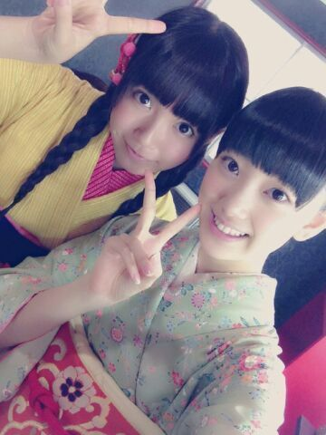
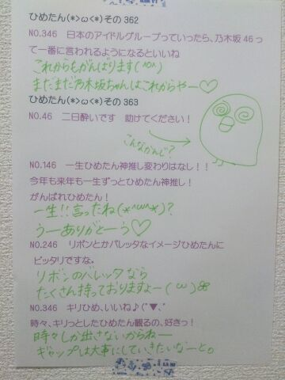

| 2014/02 10 Mon | ひめたん(*>ω<*)そ の406 |
髪のびたー( ^O^ )

おへそまであと10センチ！
毛先ちょっと切りたいなー＊＊
フルーツグラノーラ食べる時は
ミルクを注ぐ前にレーズン抜いちゃう(´・ω・｀)
レーズン好きじゃないのねー
でもフルーツグラノーラ
食べたくなる時ってあるのねー
でもねミルクを注いじゃったら
レーズンの姿が見えなくなるじゃない？
それでうっかり食べるのやなのー
だからね先に捨てちゃうの( ^ω^ )
NOGIBINGO!のDVD-BOXが発売になるよ！
ひめたんが出たのは
#1 顔面クリーム祭り！
#6 ショージキ将棋
#7 熱唱！もっともっとカラオケチャレンジ
#10 暗闇の中はなんだろな？大会
#7 ではTOMORROWを熱唱して
この企画をきっかけに
ひめたんのこと知ったよーって方もいるみたいで
すごくステキな思い出のある回です(＊^ω^＊)
メイキングなんかも収録されてるみたい！
みなさんチェックしてみてねー♪
詳しくは公式サイトまでっ
おーっと明日は個別握手会ですね！
幕張会場ですー
まだ雪が融けてないとこもあるのかな
気をつけて来てね
そーいや先日の大雪は
みなさん大丈夫でしたか(´・ω・｀)
東京はすんごいことになっておりました！
おかげさまでひめたんは
スリップしかけたけど転んでないよー

ひめたん＊みおちゃん
みおちゃん (堀未央奈ちゃん)ほんとに
着物似合うなあ。

 ひめたんは焼き芋は好きですか？
ひめたんは焼き芋は好きですか？
あーまし得意ではないかな(´・ω・｀)
ごめん焼き芋(´・ω・｀)
あたし ひめたん みたいになりたい
どうしたら ひめたん みたいになれる？
ねーやだどうしよーうー///
そんなこと言われ慣れないから
ひめたんもどーしていいかわかんなーい(〃ω〃)
一緒にかわいくなろー？＊＊
何かオススメのものとかあったら
いつでも教えてねっ
いまはまってるおかしとかあるー？
おにぎりの具は何が好きー？
いまはまってるお菓子はーなんだろうねー
おにぎりはミートボールが合うのよ！
これほんとだよーぜひやってみてー∩^ω^∩
ひめたんはバスケ以外にやっていた
習い事はありますか？
ダンス、歌、習字、ピアノ、塾、英語教室......かな
ピアノなんかは７年やって
両手で弾けなくてやめました(・∀・)
向き不向きってあるよね
ひめたんはえんぴつの針が
とがっとがになるまでけずります？
それとも多少の丸みは残す派ですか？
とがってるのがいいなー(＊^ω^＊)
小学生の頃はよくおうちで削ってくるの忘れて
学校で痛い思いしたなあー......
ひめたんは20歳女子がツインテールするの
どう思う？いいかな？許してくれる？笑
ツインテールするのに
としは関係ないね！
ほら、みんなのさゆりんごは21歳だぞ！
13さいって言ってるけど21歳なんだぞ！
 ひめたんとじゅうたんの違いを教えて下さい。
ひめたんとじゅうたんの違いを教えて下さい。
ググってください。
どうかお願い、違いに気づいてほしいな......
 あのね、食パンマン様の顔は
あのね、食パンマン様の顔は
何枚切りですか(´・ω・`)
個人的には8枚切りかなぁって思うんだけど
ふああーなんとかわいらしい。
ひめたんは食パンマンさまのお顔なんて
どっちでもいーんじゃないかと思っちゃうけども
そーねーむしろ分厚くない？
ひめたんは４枚切りを押すねー(＊^O^＊)
ちなみにひめたんままは ８枚切り派なんだと。
ひめたんのブログの
コメント欄下２ケタに46を踏んだ方へ
手書きでコメ返するコーナー
＼ ひめたん46 ／

いつもコメントありがとうございます
ひめ！口が悪いですぞ！と
たくさんの方から注意されてしまいました
ごめんなさい気をつけますっ

きゅんきゅん王国の王子様を募集したら！
なんと！
愛未 (能條愛未ちゃん)も王子様になりたいって！
ひめたんどーしたらいーんだろうね？
ひめきゅんさんのことは
もちろん大好きなんだけどね
愛未のことも大好きなんだよね。
もっと言うと愛未の明田川さんが
真面目に大好きなんだよね。
あっ明田川さんって誰？って思った方
明田川さんは去年のプリンシパルの
登場人物の一人で キザな好青年！
プリンシパルって何？って思った方
うーん！
5月頃のブログ見て！
それから、王様とか番犬とか
平民でいいやーとか
守護さんとかいろいろいたなー(笑)
うんーもうね、お好きになさって！
守護さんなんて何人でも歓迎するよ
ただし王子様はみんなで相談して決めてー
話し合いに愛未も入れたげてねー
愛未のこといじめたら
ひめたんが撃つわよー( ´ ▽ ` )
......はっ！
(＊´・ω・＊)
コメント(464)
2014/02/10 23:48